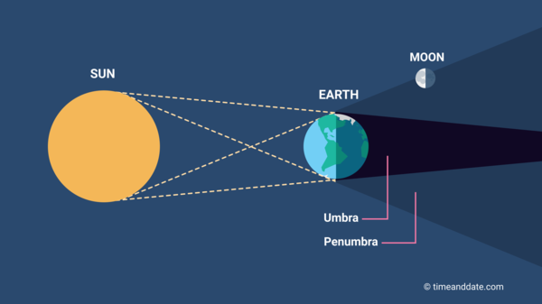

A penumbral lunar eclipse occurs when the Sun, Earth, and the Moon are imperfectly aligned. When this happens, the Earth blocks some of the Sun's light from directly reaching the Moon's surface and covers all or part of the Moon with the outer part of its shadow. Since the penumbra (areas in yellow line) is much fainter than the dark core of the Earth's shadow, the umbra (areas in red line), a penumbral eclipse of the Moon is often difficult to tell apart from a normal Full Moon.
Penumbral lunar eclipses can be partial or full. During a partial penumbral eclipse, only part of the Earth's penumbra covers the Moon's surface. This kind of eclipse is almost impossible to see. During a full penumbral eclipse, on the other hand, the Earth's penumbra covers the entire face of the Moon. Very keen observers may then see the Moon turn a shade darker during the maximum of the eclipse.
Penumbral lunar eclipses are subtle and often challenging to observe because the Moon only slightly dims as it passes through the outer shadow of the Earth. There's minimal impact on the Moon's appearance, and the Earth's atmosphere is not significantly affected.
Lunar eclipses usually don't have a significant impact on satellite communication or navigation systems.
Satellites in low Earth orbit (LEO) may experience changes in temperature during a lunar eclipse, as the Earth's shadow causes a decrease in incoming solar radiation. This can affect thermal control systems.
Every lunar eclipse begins and ends with a penumbral stage. This is where the Moon passes through the light, outer part of Earth’s shadow, called the penumbra. Often, the Moon also passes through Earth’s dark, inner shadow—known as the umbra—producing a partial or total lunar eclipse.

But sometimes, in around one out of three lunar eclipses, the Moon doesn’t reach the umbra: the penumbral stage is as deep as the eclipse gets. These events are called penumbral eclipses.